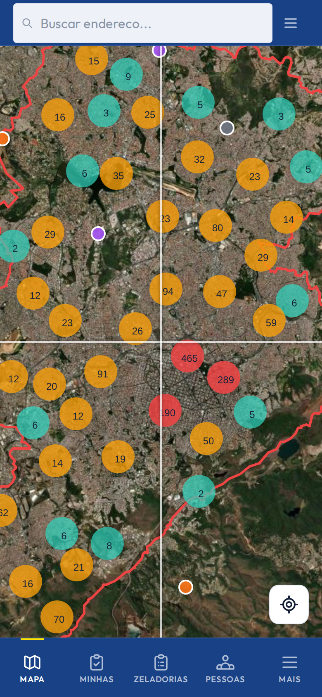

Operação
Tela principal
Mapa de campo
Interface fullscreen com mapa georreferenciado — ponto de partida de toda ação.
- Pontos coloridos por resultado da última zeladoria
- Camadas: bairros, regionais e limite municipal
- Filtros por status operacional
- Nova ação na posição atual do mapa
- Busca de logradouros e geocodificação reversa
/mapa
